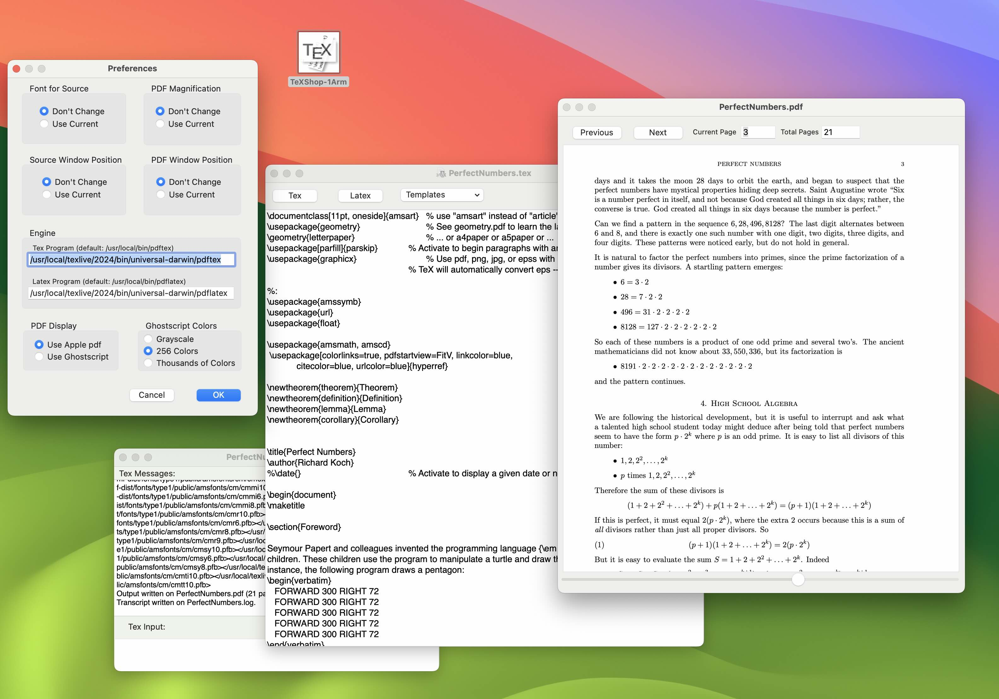
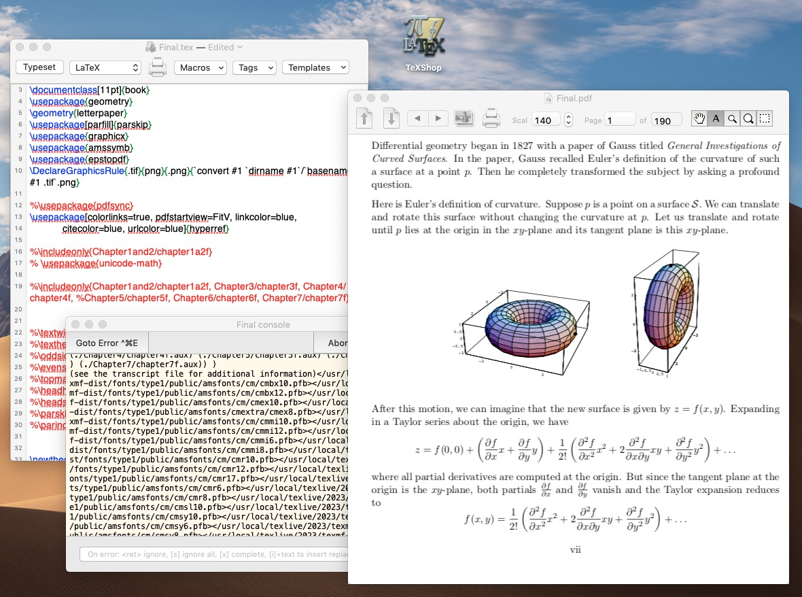
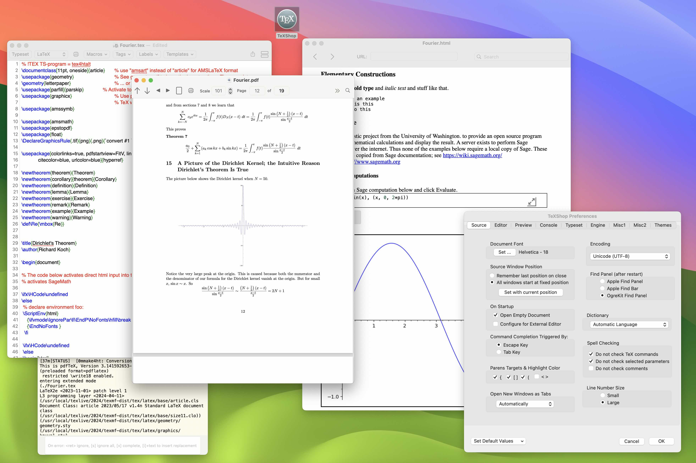

Three TeXShop Versions
TeXShop is regularly updated, so there have been many versions by 2024. Below are three samples, from 2000, 2009, and 2024. Specifically, these are versions 1.0d2, 3.11, and 5.33.I wrote the 2000 version of TeXShop without collaborators, so the program is quite primitive. It gets the job done: users can enter TeX or LaTeX source, typeset, preview the image in a viewer one page at a time, and print. There is no syntax coloring, no continuous mode in the preview window, no magnifying glass, no ability to typeset with anything except pdftex or pdflatex.
Picture of TeXShop 2000

TeXShop with Collaborators

By 2008, many collaborators had extended TeXShop with features we now consider essential. It had syntax coloring, synctex, vastly improved preview options, and features like Command Completion to aid text entry.
Picture of TeXShop 2009

TeXShop with Apple Improvements of Cocoa

During the second decade, TeXShop benefited from Apple's solution of the fragile base class problem. It got automatic saving, tab support, and better memory management. Notice Apple's new design for the toolbar. One little known recent feature is an html preview window, so tex4ht can be used to typeset and preview TeX source code typeset directly into html output. The preview window is live on the internet, and interactive web content can be added to TeX documents. In the illustration below, Sage is used interactively to graph any equation the user desires to enter.
Picture of TeXShop 2024

